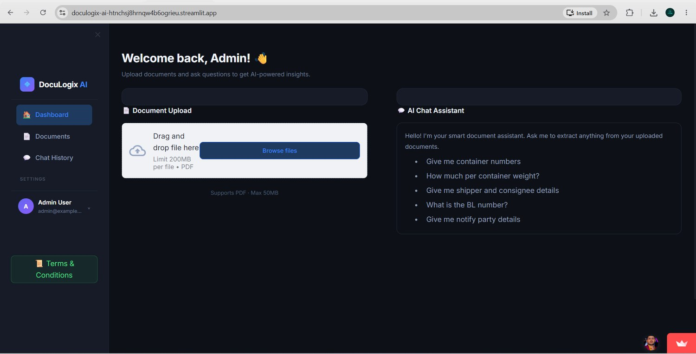

DocuLogix AI
Upload a shipping document, ask questions about it, and get structured data out — instead of reading every PDF by eye and retyping it.

Why this needed to exist
Important shipment information — consignee, container numbers, weights, invoice values — sits inside PDFs, Word files and scanned images. Someone has to open each one, read it and type the values into the next system. It is slow, repetitive and a constant source of typing mistakes.
What I built
DocuLogix AI ingests the document, extracts the useful fields with AI assistance, and lets the user query the content in plain language. The output is structured data that can move into the next business step — such as a job in the ERP — instead of staying trapped in a file.
What it can do
Multi-format ingestion
Accepts PDF, Word, JPG and PNG, so the document does not need to be converted first.
Field extraction
Pulls shipment and document fields such as B/L details out of the file.
Ask the document
Query the uploaded document in plain language and get an answer from its content.
Built for logistics paperwork
Aimed at invoices, bills of lading and packing lists rather than generic documents.
What is built — and what is not
I like being clear about where a project actually stands, so you know exactly what you are looking at.
✅ Built & working
- Document upload for PDF, Word, JPG and PNG
- AI-assisted information extraction
- Question-and-answer assistant over the uploaded document
- Extracted B/L information view
🚧 Not built yet
- Automatic push of extracted data into the Freight ERP
- Batch processing of large document folders
- Guaranteed 100% accuracy — extracted values should still be reviewed by a person
- Template training for each shipper's custom format
Real interfaces, not mockups
Use the numbers / arrows to move through the screenshots. Click the big image to open it full screen.
See it in action
Tech stack
What I learned
- AI extraction is most useful when a human can quickly review and correct the result.
- Clean field validation matters as much as the model itself.
- Starting from one document type (B/L) beats trying to support everything at once.
Need something like DocuLogix AI?
Tell me about your process. I'll reply on WhatsApp with what I would automate and what the first version should include.